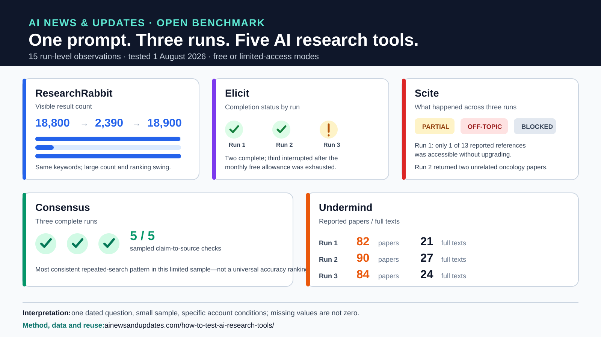

Open research dataset · Version 1.0.0
AI Research Assistant Repeatability Benchmark 2026
A transparent 15-run comparison of ResearchRabbit, Elicit, Scite, Consensus and Undermind, focused on whether repeated searches remain consistent, traceable and usable.

What this benchmark measures
- Whether matched searches complete successfully across repeated attempts.
- How visible and accessible result volumes change between runs.
- Whether sampled claims can be traced to real supporting sources.
- Where account limits, blocked access or off-topic retrieval affect the workflow.
- Whether researchers can preserve enough evidence to audit the result later.
This is not a permanent vendor ranking. It is a small, dated benchmark using one higher-education research question under disclosed free or limited-access conditions.
Open teaching activity
The accompanying five-page worksheet helps learners run three controlled attempts, record visible results and access barriers, verify sampled sources, and reach a proportionate conclusion about repeatability. It is suitable for individual or small-group AI-literacy and research-skills teaching.
Download the reusable AI Research Assistant Repeatability Worksheet.
Reuse and citation
Libraries, educators, researchers and publishers may reuse the chart or dataset with attribution. The full protocol, limitations and practical seven-step test are available in How to Test AI Research Tools for Repeatable Results.
Suggested citation:
AI News & Updates Editorial Team (2026). AI Research Assistant Repeatability Benchmark 2026, version 1.0.0.